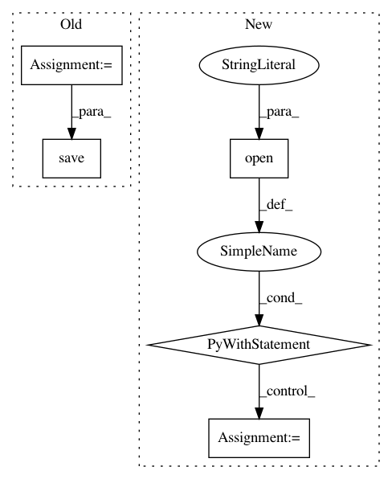

3e81dc065520b01c5e3445eef771f4b259c01227,mlflow/keras.py,,save_model,#Any#Any#Any#Any#,23
Before Change
if os.path.exists(path):
raise Exception("Path "{}" already exists".format(path))
os.makedirs(path)
model_file = os.path.join(path, "model.h5")
keras_model.save(model_file)
pyfunc.add_to_model(mlflow_model, loader_module="mlflow.keras",
data="model.h5", env=conda_env)
mlflow_model.add_flavor("keras", keras_version=keras.__version__)
After Change
if conda_env is not None:
shutil.copyfile(conda_env, os.path.join(path, conda_env_subpath))
else:
with open(os.path.join(path, conda_env_subpath), "w") as f:
yaml.safe_dump(DEFAULT_CONDA_ENV, stream=f, default_flow_style=False)
pyfunc.add_to_model(mlflow_model, loader_module="mlflow.keras",
data=model_data_subpath, env=conda_env_subpath)
mlflow_model.add_flavor(FLAVOR_NAME, keras_version=keras.__version__, data=model_data_subpath)
mlflow_model.save(os.path.join(path, "MLmodel"))
In pattern: SUPERPATTERN
Frequency: 4
Non-data size: 5
Instances
Project Name: mlflow/mlflow
Commit Name: 3e81dc065520b01c5e3445eef771f4b259c01227
Time: 2018-11-12
Author: 39497902+dbczumar@users.noreply.github.com
File Name: mlflow/keras.py
Class Name:
Method Name: save_model
Project Name: stellargraph/stellargraph
Commit Name: 45842d387c7a1c009a1345052805a191afd32198
Time: 2018-08-14
Author: docherty@gmail.com
File Name: demos/node-classification/epgm-yelp-example.py
Class Name:
Method Name: train
Project Name: bokeh/bokeh
Commit Name: beb173d604c9f975b7eed1c6e8e1152a3d4aab12
Time: 2017-04-25
Author: lcanavan@continuum.io
File Name: bokeh/io.py
Class Name:
Method Name: export
Project Name: stellargraph/stellargraph
Commit Name: 45842d387c7a1c009a1345052805a191afd32198
Time: 2018-08-14
Author: docherty@gmail.com
File Name: demos/node-classification/epgm-example.py
Class Name:
Method Name: train